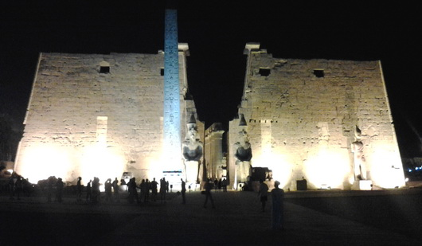
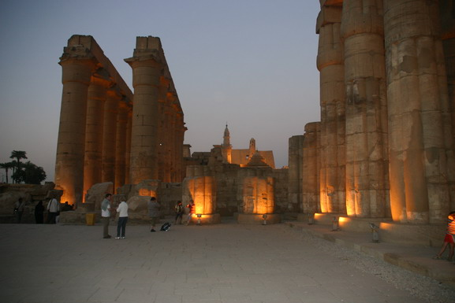
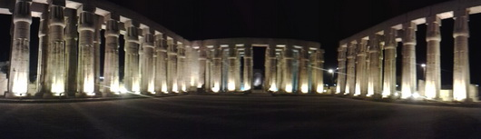

Temple of Luxor
Luxor Temple, or The Temple of Luxor, is among the most beautiful Temples in Egypt. It was known in the New Kingdom period as Ipt-Rsyt, which means the southern shrine. This was to differentiate between this Temple and Karnak Temple, which was the northern house of Amon Ra.
Amenhotep III built Luxor Temple. The architect and overseer of the works of construction was the genius Amenhotep, son of Habu. The Temple run close and parallel to the river Nile from north to south. It was constructed on the site of a small Temple of Amon, built by kings of the 12th dynasty. At the time of Amenhotep III the Temple was only 190m in length and 55m in width. Basically, Luxor Temple was consecrated to Amon Ra in his fertility aspect.


King Nektanebo built the Sphinx Avenue in front of the Temple that leads to the entrance. In front of the Great Pylon of Ramses II, there once were 2 obelisks. Only one of them remains standing! The other was transported, in 1819, to La Place de le Concorde in Paris, as a gift to King Philip Louis of France by Mohamed Ali (who ruled Egypt 1805-1850 A.D), after he was given a French clock, which has never worked properly - even to this day! There were 6 standing statues in front of the Pylon, only one of them, on the western side, is still in place. Flanking the gate of the first pylon, which is 24m high, there are two seated colossi representing King Ramses II, seated on his throne, with all the royal features. Both towers of this pylon were once decorated with relief's depicting the Battle of Kadesh, fought between the armies of Egypt and the Hittites, in present day Syria. The 1st open court has double rows of 32 papyrus bud columns.
To the right side of the open court there is an old triple shrine made by Queen Hatshepsut and Tuthmosis III, dedicated to the sacred boats of the "Triad of Thebes". To the left is the Mosque of Abou El-Hagag. The open court of Ramses II leads to the Colonnade, which was built by Amenhotep III, and decorated by Tutankhamen and later, Horemheb; Seti I, Ramses II, and Seti II all recorded their names there. It consists of two pairs of large open papyrus columns, which are arranged to make a long processional avenue. The walls of this colonnade are decorated by scenes of the Opt Festival, special ceremonies for the visit of the "Triad of Karnak" to the Temple of Luxor. This feast lasted for about 24 days, including the return to the Karnak Temple.